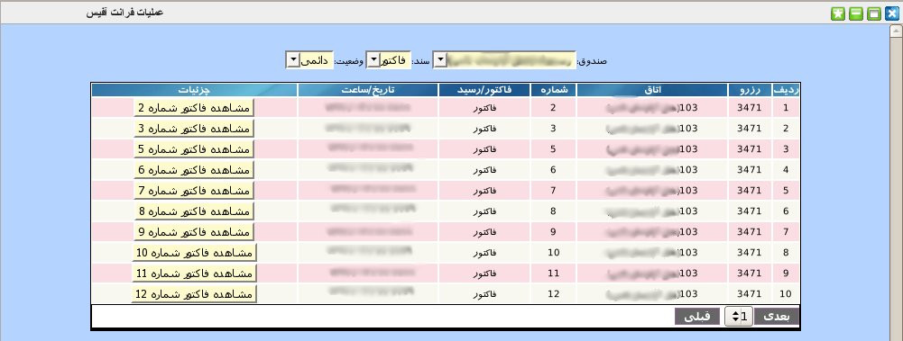
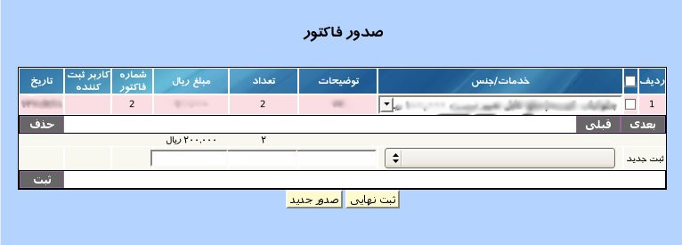
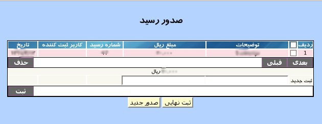

۱-عملیات فرانت آفیس
در این پنل گزارش کاملی از رسیدها و فاکتور های هر صندوق فرانت آفیس تولید می گردد.

برای گزارش گیری ابتدا باید صندوق مورد نظر را انتخاب سپس نوع سند (فاکتور یا رسید) را انتخاب و در انتها وضعیت مورد نظر (دائمی و یا موقت نوع سند) را انتخاب نمایید. سپس جدولی حاوی اطلاعات کاملی از صندوق نمایش داده می شود. از جمله شماره رزرو و شماره اتاق میهمان, شماره سند موردنظر, نوع سند و تاریخ و ساعت ثبت آن مشاهده می شود. در ستون آخر گزارش دکمه ای تعبیه شده است که با کلیک بر روی آن اطلاعات تکمیلی مربوط به رکورد مورد نظر را در اختیار کاربر قرار می دهد.


در این پنل اطلاعات جزئی هر رسید و یا فاکتور را مشاهده می نمایید. همچنین می توانید مواردی به انتهای فاکتور یا رسید در صورت عدم تایید نهایی آن اضافه نمایید و موردی را حذف و یا ویرایش کنید. البته لازم به ذکر است که شماره و تاریخ هر سند ثابت و غیر قابل تغییر می باشد.
جهت ویرایش مقادیر هر آیتم بر روی آن کلیک نمایید و پس از تصحیح کلید Enter را بزنید.
جهت حذف تکی هر آیتم, موس خود را بر روی شماره ردیف آیتم برده و بر روی لینک حذف کلیک نمایید.
جهت حذف گروهی آیتم ها, آیتم های مورد نظر را انتخاب و بر روی دکمه حذف کلیک نمایید.